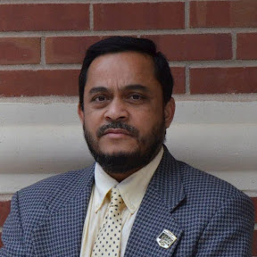

Abu Asaduzzaman joined Wichita State University as an Assistant Professor of Computer Engineering in 2010. He is currently a full professor and serves as the Associate Chair of his department. Asaduzzaman’s research interests include high performance computing, machine learning, and cybersecurity. He has authored over 150 research articles. He has received research grants from NSF EPSCoR, DoE Argonne National Laboratory, Nvidia, NetApp, and other organizations. Asaduzzaman reviews for NSF and other programs. He serves for IEEE Regon, Section, and conferences. He is affiliated with honor societies including PKP, TBP, UPE, and Golden Key. As an invited speaker, he has presented his research at professional forums in Bangladesh, Japan, Sri Lanka, Thailand, Turkey, and the USA.